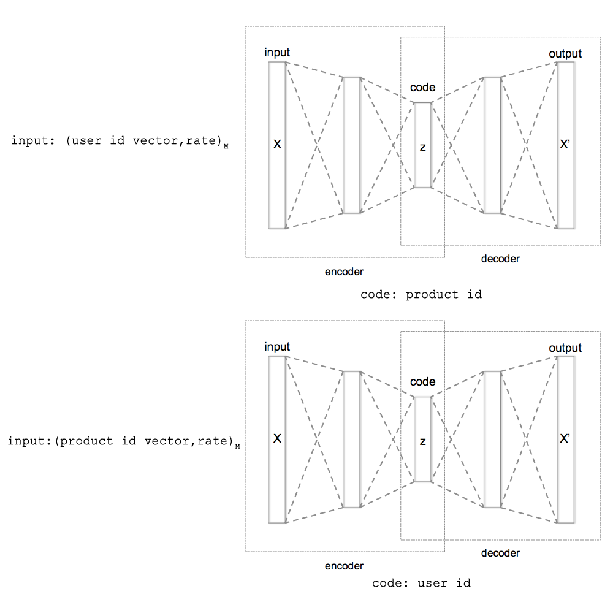

Как и во многих рекоммендационных системах у нас есть продукты, пользователи и оценки, которые выставляют пользователи (явно или не явно) продуктам. Наша задача предсказать оценки продуктам, которые ещё не оценил пользователь и тем самым предсказать те продукты, которые могут быть высоко оценены пользователями, или продукты, которые могут быть интересны пользователям. (В чем и состоит функция рекомендационой системы -- найти продукты, которые могут быть потенциально интересны пользователю.)
Необходимо было разработать рекомендационную систему, которая бы:
Как в любой классической рекомендационной системе у нас есть 1) продукты, 2) пользователи и 3) оценки пользователями продуктов.
Для каждого продукта и пользователя мы определяем вектор в N-мерном пространстве. Т.е. каждый продукт и каждый пользователь представлен у нас точкой в N-мерном пространстве. Используем два пространства. Одно для пользователей, второе – для продуктов. (Вектора идентификаторы пользователей и продуктов.)
Так же используем данные о пользователе, продукте, оценке при построении модели и при получении результатов оценок продуктов для пользователей.
Например, для набора данных MovieLens 1M мы используем:
Такие данные эвристически позволяют делать более точные оценки продуктов для пользователей. Эти данные преобразуются в вектора:
Для получения N-мерных векторов для каждого продукта/пользователя мы используем следующую схему с использованием autoencoder-ов.
Напомню, что у autoencoder обучается сжимать данные поданные на его входы и представлять входные данные в сжатом виде.)
Мы используем два autoencoder-а. На вход (и как целевое значение) мы подаем список из M (число равное 5-7) записей, каждая из которых представляет собой:
Таким образом, мы получаем в процессе обучения (на каждом шаге обучения) autoencoder-ов на входах (и целевых значениях) список из M оценок:
Также мы получаем, что первый autoencoder кодирует вектор идентификатора продукта, а второй кодирует вектор идентификатора пользователя.
В минимальном случае мы можем задавать (для первого autoencoder-а) только вектора идентификаторов пользователя и оценки. А для второго autoencoder-а только вектора идентификаторов продуктов и оценки. Т.е. опустить данные о пользователях, продуктах и оценках. Как показанно на рис 1.
Рис. 1. Схема тренировки autoencoder-ов при использовании минимальных данных для тренировки (только вектора идентификаторов пользователей, вектора идентификаторов продуктов и оценки). А также схема получения векторов идентификаторов при кодировании autoencoder-ами.
Они получаются следующим образом.
После нескольких циклов обучения autoencoder-ов (порядка 100..1000) мы задаем для второго autoencoder-а значения оценок продуктов одним пользователем (для каждого пользователя задаём K разных вариантов (число порядка 24..64)) или значения оценок пользователей для одного продукта для первого autroencoder-а.
Допустим, для одного пользователя мы задали K вариантов (случайных) оценок продуктов (второй autoencoder), т.е. сформировали K разных входов для autoencoder-а. При этом мы получили K разных сжатых значений полученных при работе autoencoder-а. (Т.е. мы получили K векторов частичных идентификаторов пользователя) (Понятно, что мы должны строить такой autoencoder, который бы имел средний слой, состоящий из N элементов, т.е. был бы равен размеру вектора идентификатора пользователя/продукта.) Мы находим среднее из этих K значений. Это и будет новое значение вектора идентификатора пользователя, к которому мы будем двигаться от текущего значения вектора идентификатора пользователя. Так мы поступаем для некоторого числа (L1) пользователей и получаем L1 средних значений.
Аналогично мы получаем L2 средних значений сжатых и autoencoder-ом, обучаемым на оценках пользователей (или кодирующим идентификаторы продукта).
Если первоначально мы используем случайные значения векторов идентификаторов пользователей и продуктов, то мы можем двигаться от наших первоначальных значений к полученным L1 и L2 средним сжатым (средние сжатые и будут новыми целевыми векторами идентификаторов).
Мы используем эвристику плавного движение к целевым значениям идентификаторов. Мы постепенно изменяем вектора идентификаторов пользователей и продуктов к полученным целевым значениям векторов идентификаторов пользователей и продуктов.
Для того, чтобы получить удовлетворительные значения для векторов идентификаторов пользователей и продуктов нужно учитывать и ещё один аспект работы autoencoder-ов – это «дыхание» закодированных значений или групповое плавание значений в некоторых пределах. При "дыхании" закодированных значений autoencoder-ов все получаемые значения смещают на некоторое смещения в ходе обучения. В результате, если мы будет использовать закодированные значения без какой-либо коррекции, то векторам идентификаторов будет сложно сходиться. Эта задача достаточно легко решается. Как это осуществляется я подробно не описываю. Этот момент решен с помощью нахождения средних смещений новых полученных векторов идентификаторов пользователей/продуктов относительно предыдущих значению векторов идентификаторов пользователей/продуктов. И далее осуществляется коррекция предыдущих значений векторов идентификаторв без учета среднего смешщения.(Смотрите исходных код для получения подробной информации.)
Когда у нас есть идентификаторы, то они оказываются упорядоченными в N-мерном пространстве пользователей или же продуктов. Близкие продукты/пользователи (исходя из оценок пользователей) находятся на малом растоянии (эвклидова метрика). Далее мы можем использовать нейронную сеть для получения функции предсказания по: 1) вектору идентификатору продукта; 2) данным о продукте; 3) данным о возможной оценке продукта (не самой оценке, а это, например, день недели/время, когда пользователь хочет посмотреть/уже посмотрел фильм); 4) вектору идентификатору пользователя; 5) данным о пользователе. Используя все эти данные мы обучаем нейронную сеть для предсказания оценки (оценок), которые может дать пользователь данному продукту при данных условиях.
Мы повторяем обучение autoencoder-ов и нейронной сети для аппроксимации функции оценки пользователем продукта. Есть некоторые нюансы холодного старта обучения autoencoder-ов из случайных начальных значений. Предложенные эвристики для решения этих проблем можно найти в предлагаемом исходном коде к статье.
После обучения мы получаем модель, состоящую из идентификаторов пользователей и продуктов из нейронных сетей – двух autoencoder-ов и нейронной сети предсказания оценки.
После обучения системы мы можем предсказывать оценки для продуктов, которые не оценили пользователи.
Но также важным моментом служит возможность того, что мы можем:
Для вычисления векторов новых идентификаторов мы используем autoencoder-ы из полученной модели. При этом мы используем тот же процесс, что и процесс получения векторов идентификаторов при обучении модели, за исключением того, что мы не обучаем encoder-ы на новых данных, а только лишь вычисляет идентификаторы.
Процесс вычисления идентификаторов может быть использован и при появлении новых оценок. В этом случае мы можем корректировать идентификаторы. В рамках уже обученной модели, т.е. опять же не переобучая/не дообучая autoencoder-ы.
При вычислении/корректировке идентификаторов мы, конечно же, в целях скорости обработки не корректируем часть модели задаваемой нейронными сетями. Но новые данные могут и изменять/расширять модель, так что такое изменение/расширение не может быть выраженно только в вычислении векторов идентификаторов пользователей/продуктов, поэтому хорошей эвристикой может быть дообучение модели через некоторый интервал времени (раз в день/неделю/месяц/квартал). Такое дообучение можно производить в пакетном режиме параллельно нормальной работе системы в рамках предсказания оценок, добавления новых продуктов, пользователей, добавления новых оценок.
Кроме решения задач, ставившихся в постановке задачи, также данный подход дает возможность вводить в системы машинного обучения память. Здесь под памятью можно понимать непосредственно значения вычисленных идентификаторов. Они в рамках модели могут представлять объекты внешнего мира, неся в себе некоторое описание объекта внешнего мира с точки зрения системы (некоторых оценок системы данным объектам). Такая помять может быть использована для описания объекта.
Кроме этого данный подход даёт возможность задавать большое количество параметров, которыми определяются векторы идентификаторов пользователей и продуктов, а также параметров оценки. (Возможно, в этом случае имеет смысл использовать эвристику задания степени влияния определенных данных на процесс обучения.)
(P.S. Looking for a job.)